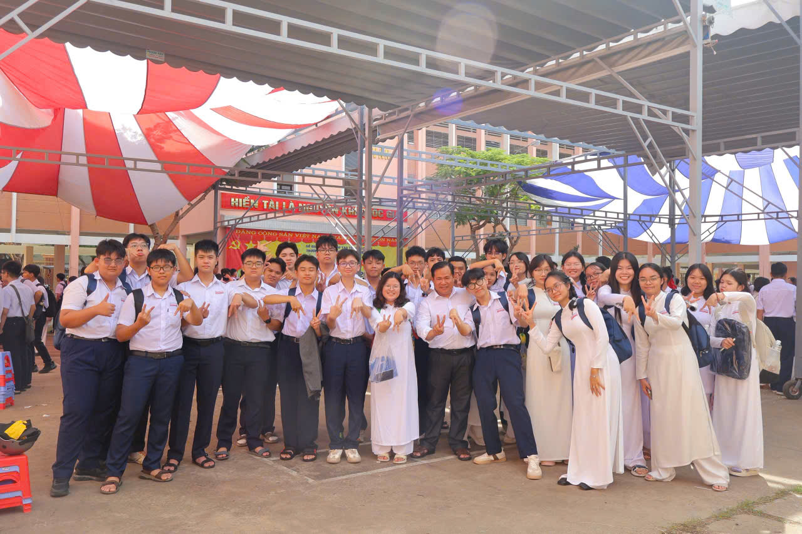
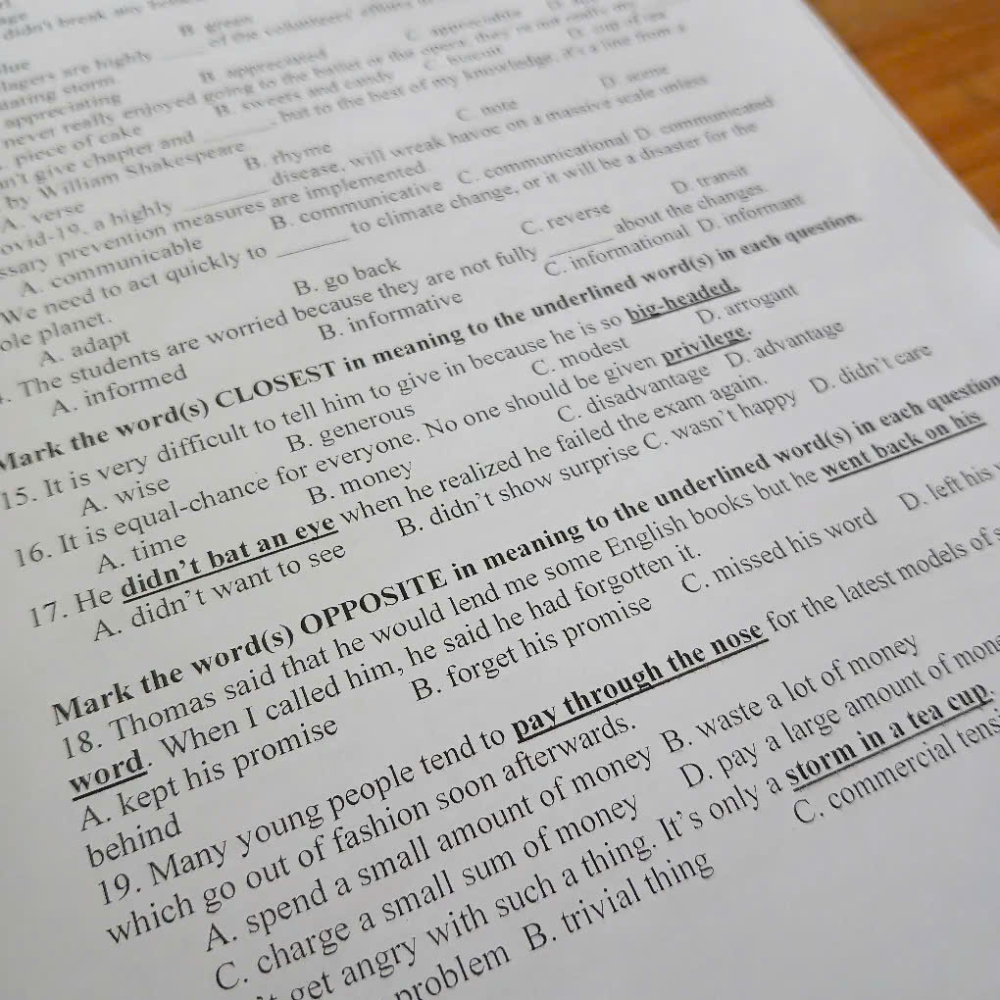
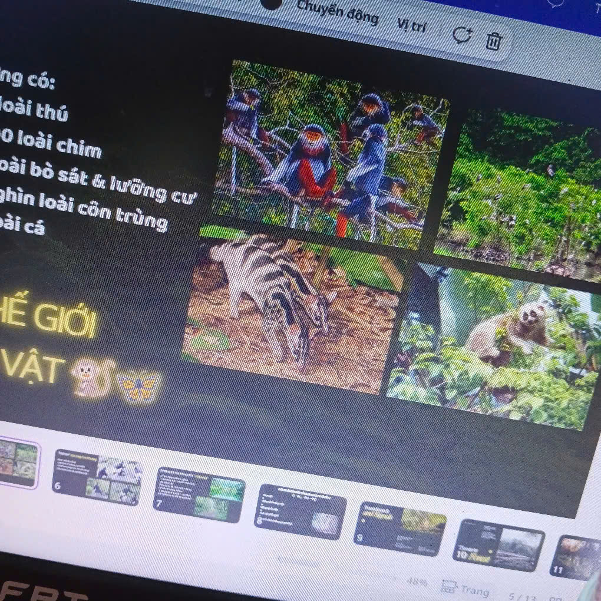
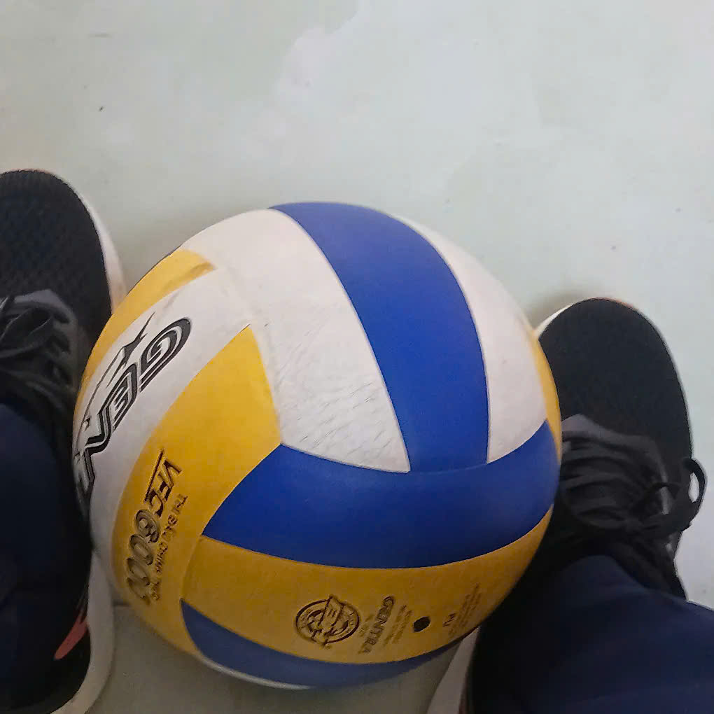
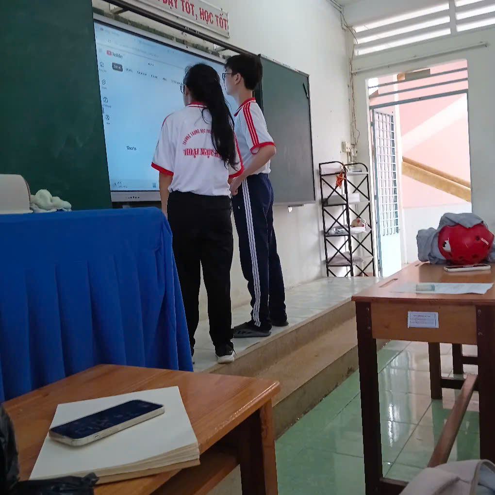

Here are some of my moments at school
This is my class photo from the School Opening Ceremony this year

I would like to say that I hate school tasks so much.

This is me when I have to stay up late to finish my group presentation before the deadline. Yeah! So tired!

At my school, students are be able to choose the sports they like to play. And I choose volleyball, although my teamwork is not good.

This is me (I took this photo) and my friends when we have free time at school, we often watch movies on Youtube.

Moreover, I also participated in school events and activities, which helped me develop valuable skills and make new friends. For example, I was chosen to attend a stem-training course at my school, where I learned about robotics and programming. It was a great experience that allowed me to explore my interests and gain practical knowledge in the field of STEM.